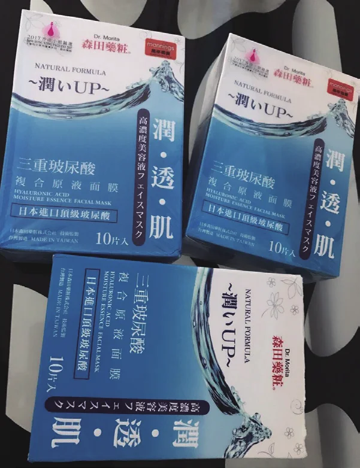

Qui est Amy Skin OEM ?
Amy Skin est une marque de soins de la peau en marque privée (OEM / ODM) fabriquée dans notre usine à Guangzhou, en Chine. Nous aidons les marques nouvelles et en croissance à lancer leurs soins de la peau avec des formules prêtes ou un développement personnalisé, à partir d'un MOQ de 500–1,000 unités par SKU.
Notre promesse: 3A
Arrive fiable. Grande peau, prix honnêtes — et la production vous pouvez suivre pas à pas.
Toujours détendu. Faible MOQ. Skincare fait simple. Services OEM / ODM qui sont effectivement accessibles aux petites marques.
En fait, c'est abordable. Prix concurrentiels et honnêtes — cotés par commande, non fixés sur ce site, parce que le bon prix dépend de la formule, du paquet et de la quantité.
D'où nous venons
Notre fabrication remonte à plus loin que le nom d'Amy Skin. Notre usine à Guangzhou, en Chine, gère une base de parc industriel, avec 20 ans et plus d'expérience de fabrication. Amy Skin rassemble cette production sous une marque de marque privée.
Marques pour lesquelles nous produisons
Notre usine produit pour des marques établies au pays et à l'étranger, y compris un groupe pharmaceutique Fortune Global 500 et un groupe de détergents de premier plan.

Baiyunshan
Guangzhou Baiyunshan Pharmaceutical Holdings, fondé en 1997 — une marque Fortune Global 500, a mis l'accent sur la santé pendant 400 ans. Classé 205ème sur la liste 2020 China Brand Festival 500; listé dans Hong Kong et Shanghai.

Dr.Morita
Fondée en 1934 à Changhua, Taiwan, avec des succursales à Shanghai, Hong Kong et Tokyo. Connue à travers Taiwan comme un expert en masque facial — une maison de soins de la peau établie de longue date.

CnIce (NICE Group)
Un chef de file chinois en matière de détergents pour lessive et de produits de soins personnels, et un leader national dans son industrie, honoré comme une entreprise de crédit AAA et un site de démonstration éco-industriel national.
Nos équipes
Équipe professionnelle + technologie professionnelle = service professionnel. Trois équipes transportent chaque commande d'idée à étagère.

Planification et conception
Le lieu de naissance de l'âme d'un produit — une planification fondée qui donne à un produit une vitalité durable.

Législation et réglementation
Un système de classement complet et une gestion juridique professionnelle, protégeant votre marque.

R&D
La pierre angulaire de l'entreprise — diligente et axée sur l'innovation, toujours raffinée, apportant à ses clients une nouvelle inspiration.
Ce qui est confirmé
| Élément | Confirmé |
|---|---|
| Marque & logo | Serif noir et or — Mot-symbole Cormorant Garamond, marque goutte-à-goutte, Hero Noir #0A0908 / Champagne Or #C9A86A / Crème #FAF6EF / Blanc #FFFFFF |
| Modèle | Soins de la peau en marque privée OEM / ODM — fabriqués dans notre usine à Guangzhou, en Chine |
| MOQ | 500 à 1,000 unités par SKU |
| Formules | 10,000 formules prêtes, plus formulation personnalisée — chaque marque obtient sa propre formule |
| Attestation | SGS ISO 22716 (vérifié). |
| Contact | WhatsApp +86 189 2882 3858; info@amyskinoem.com |
Obtenez un devis Nous WhatsApp
Suivant : Certifications par marché → · Le processus en 6 étapes →